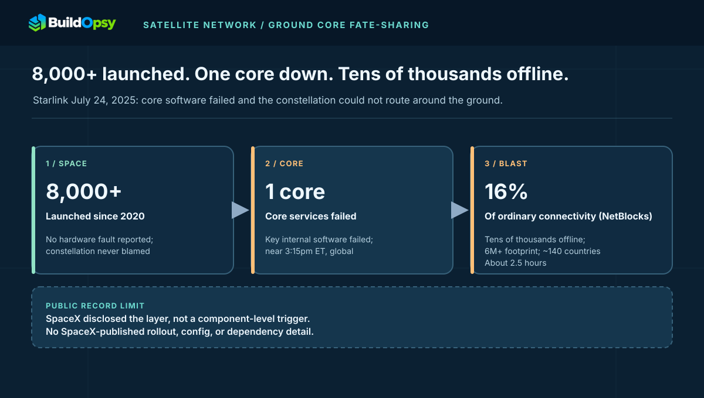
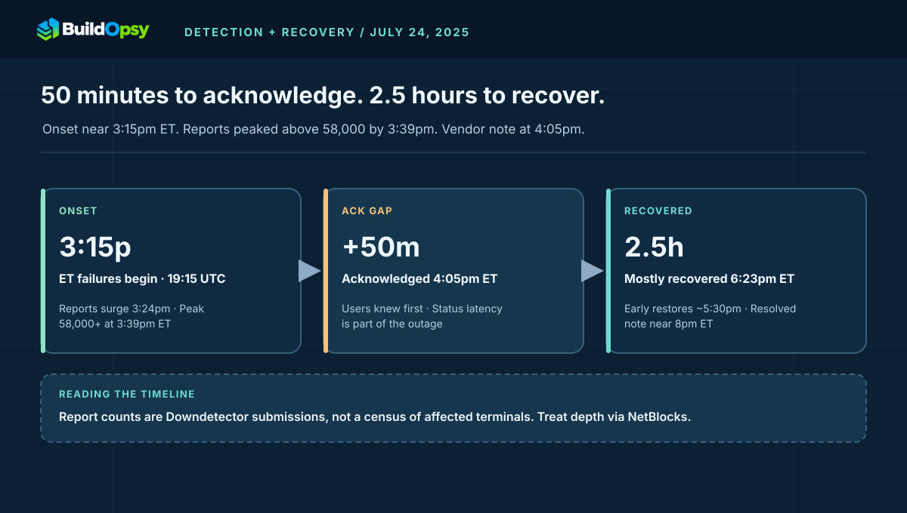

1. The Afternoon the Sky Went Quiet
User reports began around 3:15 p.m. ET (19:15 UTC) on Thursday, July 24, 2025. Downdetector logged a surge from about 3:24 p.m. ET, peaking above 58,000 reports near 3:39 p.m. ET, with some trackers counting up to 61,000. Reports came from the US, Europe, Asia, Africa, Australia, and Colombia — a genuinely global shape, not a regional gateway cut.
Starlink acknowledged the outage on X at about 4:05 p.m. ET, writing that it was "currently in a network outage" and "actively implementing a solution." Service began returning for some users around 5:30 p.m. ET. At 6:23 p.m. ET, Michael Nicolls, Starlink's VP of Engineering, wrote that the network had "mostly recovered from the network outage, which lasted approximately 2.5 hours," adding: "The outage was due to failure of key internal software services that operate the core network." Elon Musk apologized separately and wrote that "SpaceX will remedy root cause to ensure it doesn't happen again." By about 8 p.m. ET the company posted that the network issue was resolved.
| Time (ET / UTC July 24) | Signal | Source |
|---|---|---|
| ~3:15 p.m. ET / 19:15 UTC | First user-visible failures | Downdetector onset, press timelines |
| 3:24–3:39 p.m. ET | Surge to 58,000+ reports | Downdetector via Reuters, Guardian, CNET |
| ~4:05 p.m. ET / 20:05 UTC | Starlink acknowledges outage | Starlink on X |
| ~5:30 p.m. ET | Early restores reported | Press timelines, user reports |
| 6:23 p.m. ET / 22:23 UTC | "Mostly recovered," ~2.5 hours, core-services cause | M. Nicolls on X |
| ~8 p.m. ET | "Network issue resolved" | Starlink on X |
The design lesson from the timeline alone: the gap between user-visible onset and vendor acknowledgment ran roughly 50 minutes. For a network carrying battlefield traffic, that gap is part of the outage. Status latency is a reliability feature, and this one was slow.
Read both headline numbers with their methods attached. Downdetector counts submissions from users motivated enough to report, so 58,000 reports is a floor on awareness, not a census of affected terminals — rural users and machine-to-machine terminals rarely file reports. NetBlocks measures differently: its observatory network samples reachable connectivity telemetry and reported global Starlink levels at just 16 percent of ordinary levels, which speaks to depth rather than headcount. The two numbers answer different questions, and the honest pair is breadth from one plus depth from the other.

2. The Architecture: Why Satellites Cannot Route Around the Ground
A LEO broadband network has two halves that marketing collapses into one. The space segment — thousands of satellites with inter-satellite links — moves packets between antennas in the sky. The ground segment — gateways, points of presence, the core software that authenticates terminals, assigns capacity, computes routes, and hands traffic to the internet — decides which packets go where. User terminals must attach through this core before any satellite hop carries useful traffic.
Nicolls' sentence places the failure squarely in the second half: services "that operate the core network." That wording, plus the global and simultaneous shape, is why independent observers converged on a centralized control-plane failure. ThousandEyes published an outage analysis describing exactly that: a centralized control-plane failure of the LEO service. Kentik's Doug Madory called it a total, global outage — and, by his assessment, likely the longest Starlink had suffered as a major provider. Neither claim names an internal component, because SpaceX named none.
This is the same moral as the Azure WAN route-withdrawal teardown through the opposite organ. Azure lost its map; Starlink lost its core. In both cases the forwarders were healthy and the thing that tells forwarders what to do was not. Redundancy in the forwarding plane cannot survive fate-sharing in the control plane.
This is the same ground layout whose milliseconds are priced in the companion latency whitepaper teardown: the outage covers what happens when that core stops, the teardown covers what it costs when it runs. One network, two taxes: availability and latency, both collected on the ground.
3. The Mechanism: One Core, Every Gateway, All at Once
Take the public facts as constraints. Thousands of satellites healthy. Gateways on multiple continents dark at the same minute. No regional pattern. Recovery roughly simultaneous. The failure that satisfies all four is a shared dependency above the gateways: the core services that every attach, auth, and routing decision flows through. When that tier fails, every gateway fails the same way at the same time, and the constellation's size becomes irrelevant — there is nothing useful to forward.
State the inequality plainly. Let C be the number of independent core instances that can each serve the attach load, and let F be the number that a single bad input can kill. The network survives only while C − F ≥ 1 under peak load. A "redundant" core with three replicas sharing one software build, one config channel, and one database fails as C = 1 the moment the shared input turns bad. The July outage behaved like F = C: whatever failed did not stop at one replica.
What failed inside the core is undisclosed, and that boundary matters. Cornell's Gregory Falco speculated publicly that a bad software update — "not entirely dissimilar to the CrowdStrike mess" — or a cyberattack were both possible. Treat both as speculation from an outside expert, not findings: SpaceX never confirmed a rollout, a config push, or an intrusion, and no forensic evidence for any of them is public. The honest postmortem sentence is short. The core failed. The trigger is unknown.
4. Recovery and Second-Order Effects: The Storm After the Silence
The outage did not end when the core restarted. It ended when the backlog drained. Roughly 6 million terminals, plus new direct-to-cell demand around T-Mobile's public launch the day before, all needing to reattach, re-authenticate, and re-establish sessions within minutes. Offered load at recovery easily exceeds steady state — model 2 to 3 times normal in the first five minutes — while the just-recovered core is at its most fragile. Without staggered reconnect ceilings, the rescue re-drowns the rescued. That Starlink recovered inside the same 2.5-hour window suggests the backlog drained rather than re-collapsed, but no staged-reconnect advisory was published, so the ramp behavior stays unconfirmed.
The sharpest second-order effect was in Ukraine, where troops rely on Starlink for battlefield communications. The commander of Ukraine's drone forces reported service "down across the entire front," with connectivity returning after roughly 150 minutes — described as the longest outage of its kind during the war. US Navy drone-boat tests were hit too: Reuters reported in April 2026, citing internal Navy documents, that 24 unmanned surface vessels off the California coast lost connectivity and halted operations for almost an hour. The pattern matches the Discord voice thundering-herd teardown: the incident is not over when the process restarts, it is over when the herd has been reabsorbed without re-saturating the gate.
Two adjacent facts bound the blast radius without resolving it. Press timelines noted the outage arrived a day after T-Mobile's public launch of its Starlink-powered satellite service — more first-time attaches queuing against the same core, though no source ties the launch to the trigger. And Reuters noted it was unclear whether Starshield, SpaceX's military satellite business holding Pentagon and intelligence contracts, shared the outage at all. Both stay open questions. Neither belongs in the mechanism, and both belong in the watch list.
For operators depending on Starlink — and for regulators in India weighing entry — the takeaway is structural. Gateway and point-of-presence diversity, lawful-intercept localization, and in-country peering are design constraints on exactly this core: they decide where the core can fail, who can still attach when it does, and which traffic keeps a local path. That is an architecture discussion, not a feud. Dependence on one provider's core is a single point of failure wearing a constellation as camouflage.
SpaceX's disclosure is thin, so take what it proves and convert it into four demands on any core you operate:
- Isolate the core into cells with independent fate. Split attach, auth, and routing into independently deployable, independently configured cells per region or per gateway group, following the cell-based control plane pattern. A core that can only fail globally will eventually fail globally. Prove one cell can die while the rest serve.
- Stage every core rollout like a route withdrawal. Canary one cell, watch attach success and error budget for a fixed window, halt on deviation — the same discipline the Cloudflare edge teardown demands for config. A fleet-wide push of core software with no canary geography is a global outage pre-authorized.
- Shed and stagger the reattach storm. Cap reconnects per gateway with jittered backoff ceilings, prioritize re-auth of active sessions over new attaches, and keep a reserved lane for status and control reads. Size the survivor for peak plus storm (model 1.3–1.5× peak). Test the ramp with the backlog drain calculator before the morning you need it.
- Keep an emergency fallback that does not need the core. A degraded mode — cached auth with short TTLs, last-known-good routes, SMS-grade messaging — must live outside the core's fate. Publish the fallback's capacity honestly ("survivor carries X attaches per minute at p99 Y") instead of asserting redundancy without numbers, the gap the BLR1 teardown exposes.
For market-entry designs, add the localization row to the same review: where gateways sit, where intercept and logging execute, and which failures still leave a local path. Those answers belong in the architecture review before the license, not in the postmortem after the outage.
Upstream diversity, saturation drills, and reconnect ramps are taught directly in the cloud networking course and the distributed systems course.
5. Field Glossary: Eight Terms This Incident Teaches
Satellite outages punish terrestrial vocabulary first. Eight terms, each tied to what the record describes:
| Term | What it means here | Why it mattered on July 24 |
|---|---|---|
| Core network | The ground software that authenticates terminals, assigns capacity, and routes traffic. | The failed tier; everything downstream of it went dark together. |
| Control plane | Decisions about where traffic goes, distinct from the traffic itself. | ThousandEyes' diagnosis: centralized control-plane failure over a healthy data plane. |
| Gateway / PoP | Ground stations and ingress points bridging satellites to the internet. | All gateways failed the same way — proof the fault sat above them. |
| Attach vs auth | Joining the network versus proving who you are; both gated the core. | Recovery meant millions of attaches plus auths hitting a fragile core at once. |
| Fate-sharing | Two things failing for one reason. | 8,000 satellites shared the core's fate despite zero shared hardware. |
| Downdetector floor | Voluntary user reports — a floor on awareness, not a census. | 58,000+ reports measured who complained, not how many terminals died. |
| NetBlocks depth | Observatory-sampled connectivity relative to ordinary levels. | 16% of normal measured how deep the outage cut, not its headcount. |
| Reattach storm | The backlog surge the moment the core returns. | Millions of sessions re-establishing within minutes against a just-recovered tier. |
6. Operator Playbook: Your First 30 Minutes of Provider-Core Loss
When every terminal drops at once and your own gear looks healthy, suspect the provider's core, not your site:
- Minute 0–5: confirm provider-down with two independent signals. Terminal status plus a third-party source — Downdetector surge, NetBlocks, ThousandEyes — before touching any local config. One dashboard is a rumor; two signals are a verdict.
- Minute 5–10: declare it and fail over. Shift critical traffic to the backup path (fiber, cellular, second constellation) while the primary is still silent. The teams that waited for the vendor's 4:05-style acknowledgment donated 50 minutes.
- Minute 10–20: freeze reconnects and retries. Cap terminal re-dials and application retries with jittered ceilings so your own fleet does not hammer a recovering core. Stagger by site priority: command links first, bulk sync last.
- Minute 20–30: plan the staged return. Pre-stage attach ceilings per gateway so the moment service restores, your backlog drains as a ramp, not a cliff. Announce the next check-in time; "on backup path with primary monitored" is a legitimate posture.
Afterward, demand two artifacts from the provider review: the core's cell map (which faults stay regional, in writing) and a measured reattach capacity number at peak plus storm. The cloud networking course teaches provider-diversity drills and saturation ramps directly.
7. The Cost Model: A Formula, Not a Fiction
No private telemetry, no invented invoice. Model exposure as: affected terminals × affected minutes × value per terminal-minute + response labor + SLA exposure. Take a labeled scenario — 100,000 enterprise-adjacent terminals dark for 150 minutes at a modeled $0.02 of margin per terminal-minute — and the service-credit exposure alone crosses $300,000 before a single engineer picks up the phone. Change the per-minute value and the total scales linearly; that is the point. Run your own inputs through the downtime cost calculator. The ratio between idle infrastructure burn and human-plus-contract exposure is the lesson, not any plug number.
| Scenario (labeled model) | Terminals × minutes | Modeled exposure |
|---|---|---|
| 100k enterprise terminals, 150 min, $0.02/terminal-min | 15M terminal-minutes | $300,000 service exposure |
| 10k battlefield-adjacent terminals, 150 min, $0.50/terminal-min | 1.5M terminal-minutes | $750,000 mission exposure |
| 1M consumer terminals, 150 min, $0.001/terminal-min | 150M terminal-minutes | $150,000 credit exposure |
| Response labor, any scenario | 6 engineers × 4 hours × $80/hr | ~$1,920 plus verification |
Appendix A. Worked Example: Sizing the Reattach Ramp
Labeled scenario model throughout — SpaceX disclosed no attach rates. Take 6 million terminals needing reattach after a 150-minute outage. If the recovered core can process 40,000 attaches per second and terminals retry immediately, the naive backlog offers 6M attempts in the first minute against 2.4M of capacity — a 2.5× overload that re-saturates the core before first useful byte. Staggering with per-gateway ceilings changes the arithmetic completely:
| Ramp scenario | Offered in minute one | Verdict |
|---|---|---|
| Unstaggered: all 6M retry at once | 6.0M vs 2.4M capacity (250%) | Re-collapse — rescue drowns the rescued |
| Ceilings at 50% of capacity per gateway group | 1.2M vs 2.4M capacity (50%) | Drains in ~5 minutes with headroom |
| Priority lanes: command first, bulk last | 0.4M critical + queued bulk | Mission traffic first, storm contained |
| Proven design: ramp ≥ backlog ÷ 5 min + margin | ≤ 80% of measured capacity | Recovery is a ramp, not a switch |
Model your own backlog with the backlog drain calculator: backlog equals excess rate times burst seconds, and drain time equals backlog divided by spare capacity. A ramp that looks "slow" at minute one is what finishes by minute five.
Appendix B. Reference Posture: The Provider-Core Review I Would Demand
The document I would require before calling any provider core dependable:
- A cell map. Every attach, auth, and routing service listed with its independent deploy unit, config channel, and failure domain. Any two services sharing a row fail as one — count them accordingly.
- A measured reattach number. "The core absorbs X attaches per second at p99 Y ms, measured date." Rates asserted without a drill date are rumors.
- A rollout policy. Single-cell canary with automatic halt on attach-success deviation, in writing. Fleet-wide pushes without geography are pre-authorized outages.
- A reconnect ramp. Per-gateway ceilings with jitter, exercised in the last game-day. The storm after the storm is a choice.
- A status-latency SLA. Vendor acknowledgment within N minutes of user-visible onset, on a channel outside the core's fate. Fifty minutes of silence is a second outage.
- A localization row. Gateway sites, intercept and logging execution points, and which faults still leave a local path — answered before the license, not after the outage.
Pair this review with the cloud networking course and re-run it whenever the provider ships core software or your peak changes. Provider cores rot silently; only drills keep them honest.
Appendix C. Deep Dive: Anatomy of Attach Collapse — Why Sessions Die First
Attach collapse kills sessions (useful connectivity) long before it kills attaches (raw associations). The radio stays busy; the work stops. Here is the sequence that runs inside a core under reattach storm, stage by stage.
Stage 1: auth queues fill, latency climbs. Every attach needs credential checks against session state. As offered attaches pass capacity, queues grow and each terminal waits longer — users feel "connecting" before anything errors. The only gentle stage, lasting minutes at most under 2× overload.
Stage 2: timeouts fire together. Terminal and application deadlines (5–30 s) expire roughly together across millions of devices. Every timeout spawns a retry on top of the still-queued original — two layers of demand multiplying the same overload, exactly the retry amplifier in the Discord voice teardown.
Stage 3: session state churns. Half-established sessions consume state memory and database writes, then time out and must be garbage-collected — the core spends write budget on sessions that will never serve traffic. Useful work per write collapses while the database looks heroic on throughput counters.
Stage 4: status goes dark with the workload. Operator dashboards and vendor status reads share the same core, so observability degrades with the traffic instead of above it — the 50-minute acknowledgment gap as architecture, not accident.
The escapes, in order of leverage: per-gateway attach ceilings that cap offered load below capacity (protects the queue); priority lanes that serve re-auth of live sessions before new attaches (protects the mission); short-TTL cached auth that lets recent sessions resume without a database write (removes work instead of adding capacity); and status reads on an independent path (protects the window). None adds core capacity. All protect sessions — the only number users ever feel.
Appendix D. The Drill: A Half-Day Game-Day for Provider-Core Loss
The reattach number in Appendix A is a rumor until a drill produces it. Here is a four-hour exercise that mints a real one — run it against staging plus a maintenance-window production slot, with the provider invited, not surprised.
Hour 1: baseline and hypotheses. Record attach success rate, session-establishment p99, and per-site error budgets on the primary path. Each team writes its prediction: "losing the provider core moves X terminals to backup in Y minutes; site Z degrades first." Predictions go on the wall; the drill grades them.
Hour 2: provider-down inject. Drain the primary provider path at production-shaped load and run the §6 playbook for real: two-signal confirmation, failover declaration, retry freeze. Measure what actually moves — which sites wobble, where the backup saturates, whether the declaration needed a meeting. If failover needs a meeting, the drill has found its first fix.
Hour 3: the reattach storm. Restore the primary and release the full terminal backlog at once as a test case; SpaceX did not report this as part of the July incident. Practice the staggered return until ramp timings are muscle memory, because the real morning will not offer rehearsal time. Time the drain with the backlog drain calculator open.
Hour 4: the core review. Score predictions against measurements, publish the reattach number with its drill date, and file the gaps as dated work items: cell-map corrections, ceiling values, status-channel independence, provider questions. A game-day whose artifacts are a number, a date, and a ticket list beats a postmortem every time — it prices the fix before the outage does.
8. The Verdict
SpaceX's disclosure proved the layer and the shape: core software services failed, the healthy constellation could not compensate, and roughly 6 million users across 140 countries felt it for about two and a half hours. NetBlocks' 16%-of-normal reading and the 58,000-plus Downdetector reports corroborate depth and breadth; ThousandEyes' control-plane analysis gives the mechanism a credible second witness. What remains open is everything inside the core — the trigger, the blast containment that did not exist, and whether the follow-up root-cause review SpaceX promised changed the rollout and cell design.
Two and a half hours. Eight thousand witnesses in orbit. One core on the ground.
What to watch next: whether SpaceX publishes the promised root cause with component-level detail, whether attach and auth get celled so the next core fault stays regional, and whether your own dependency plan treats any single provider's core — satellite or cloud — as a fate you have priced. The next core morning is already scheduled by somebody's deploy calendar. The only open question is whether the network has rehearsed surviving it.
Sources and Method
Timeline, scale, and the core-services cause follow SpaceX statements on X via Nicolls and Musk plus contemporaneous wire reporting. Depth and breadth figures are attributed to NetBlocks observatory reporting and Downdetector submission counts as carried by Reuters, Guardian, CNET, and Straits Times; report counts are treated as a floor on awareness and NetBlocks levels as depth, not headcount. Kentik and Cornell remarks are labeled speculation, and the T-Mobile launch timing plus the Starshield open question are attributed to press timelines, not adopted as mechanism. Capacity, storm-multiplier, and cost figures are Buildopsy's labeled scenario models. No internal SpaceX data was used, and no bypass or intercept detail is included.
- Reuters: SpaceX probes cause of Starlink's global outage (July 25, 2025)
- Guardian: Tens of thousands knocked offline after software failure (July 24, 2025)
- ThousandEyes: Starlink Outage Analysis, July 24, 2025
- Straits Times: 2.5-hour outage, Ukraine front impact, Kentik and Cornell remarks (July 25, 2025)
- TelecomsTechNews: Timeline reconstruction — 3:15 p.m. ET onset, Nicolls 6:23 p.m. ET recovery note
- CNET live timeline: onset, Downdetector peak, Nicolls recovery note (July 24, 2025)
- Reuters: Starlink outage hit Navy drone tests, exposing Pentagon reliance (April 16, 2026)
- Buildopsy companion: Azure WAN route-withdrawal teardown
- Buildopsy companion: Starlink latency whitepaper teardown
- Buildopsy companion: DigitalOcean BLR1 upstream saturation